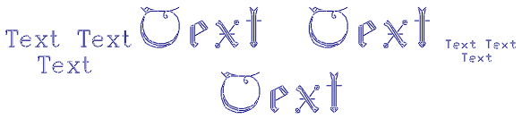
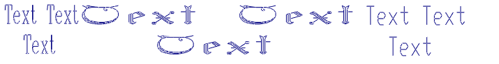

static sgCText* sgCText::Create(const sgCFont* fnt, const SG_TEXT_STYLE& stl,const char* string)
Description:
Creates an object of the TEXT class with the specified font and style. The text object is created in the XOY plane so that the coordinates origin coincides with the bottom left corner of the first text character.
Arguments:
fnt - pointer to the font (read more about fonts - sgCFont),
stl - text style structure.
This structure is described in sgTD.h and has the following fields:
typedef struct
{
unsigned char state;
double height;
double proportions;
double angle;
double horiz_space_proportion;
double vert_space_proportion;
} SG_TEXT_STYLE;
state - text vertical status. If this field value is SG_TEXT_VERTICAL the text direction is vertical, otherwise horizontal.
height - character height
proportions - width to height ratio
angle - characters slope angle (in degrees)
horiz_space_proportion - horizontal character interval (in %)
vert_space_proportion - vertical character interval (in %)
string - text string itself
Returned value:
Returns the pointer to the created object. If the function fails NULL is returned.
Following shortening is defined:
#define sgCreateText sgCText::Create
Explanation:
Below you can see illustrations of text objects with various parameters:
Various fonts |
Various dimensions |
 |
Various angles |
Various ratio |
 |
See also:
Objects hierarchy sgCObject methods